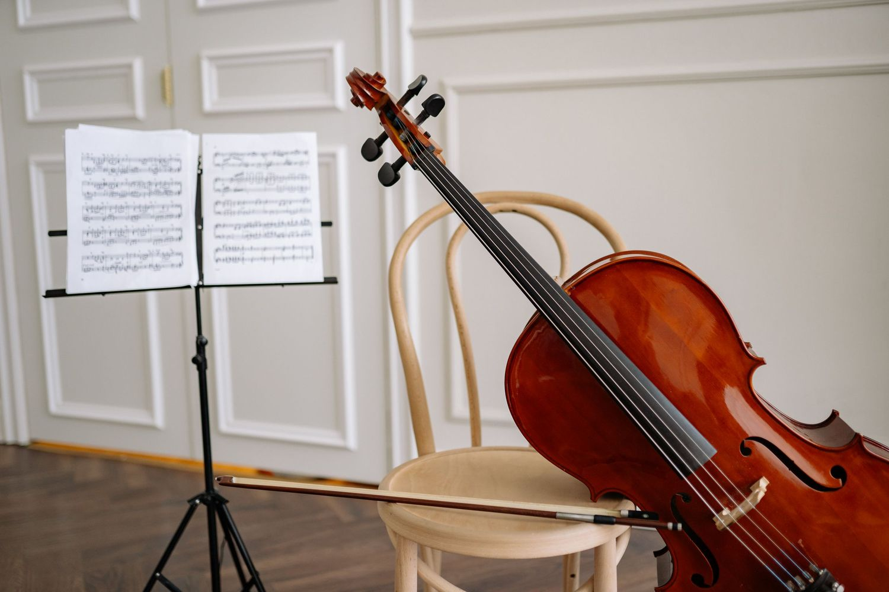

Odile Rannoch · Teaching
The studio
Advanced, pre-professional and returning adult players. Fees stated openly, intake twice a year, and a reply to everyone.
| Who | Advanced and pre-professional players, conservatory and university students, and returning adult players. Auditioned entry, small studio, capped at twelve. |
|---|---|
| Where | In person in Boston (a studio near the conservatory, address on confirmation) and online worldwide. |
| Format | 60 or 90 minutes, weekly or fortnightly; a four-lesson block for audition preparation; single consultation lessons available to non-studio players. |
| Intake | September and January, with a waitlist between. |
Fees
| 60 minutes | $140 |
| 90 minutes | $195 |
| Four-lesson audition block | $520 |
| Single consultation | $165 |
| Masterclass day rate | On enquiry |
Two places each year are held at a reduced rate. Ask; it is not awkward and you will not be the first.
Ashfield Conservatory
I am Senior Lecturer in Cello at Ashfield Conservatory of Music, two days a week during term. Enquiries about studying with me there go through the conservatory's admissions office, not through this site.

Half-day
Three hours, four players, forty minutes each, with observers welcome. It works best when players bring a movement rather than a whole work. I need a room with a good acoustic, a piano and a pianist if any of the repertoire needs one, and the list of repertoire a week ahead.
Full day
The half-day format morning and afternoon, with a short session over lunch on practising — how to plan it, how to tell when it has stopped working. Suited to conservatories and university departments.
Three-day residency
Masterclasses, individual lessons, a chamber coaching session and, if the host would like it, a short recital with a conversation about the programme. I'll usually build this around a concert in the same city to keep costs down.